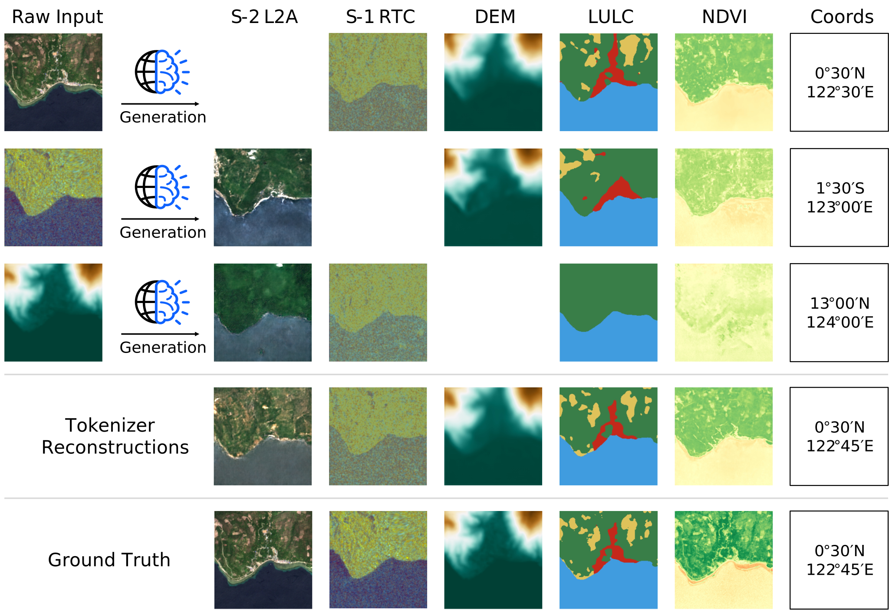

TerraMind

built by IBM and ESA Φ-lab
ü§ó Models arXiv Code Challengetrained at Julich Supercomputing Center with funding via the FAST-EO project
ü§ó HuggingFace Downloads per Month: 10K+
Meet TerraMind, the first any-to-any generative, multimodal foundation model for Earth observation. TerraMind represents new levels of understanding geospatial data, introduces new capabilities such as Thinking-in-Modalities (TiM), and outperforms existing models significantly across community-standard benchmarks.
üí° How does TerraMind work?
TerraMind is pretrained on dual-scale representations combining both token-level and pixel-level data across modalities. On a token level, TerraMind encodes high-level contextual information to learn cross-modal relationships, while on a pixel level, TerraMind leverages fine-grained representations to capture critical spatial nuances.
Due to the multimodal correlation learning, TerraMind can be applied for different downstream applications. TerraMind encodes inputs into a well-structured embedding space, making the encoder suitable for classical fine-tuning. Additionally, we introduce Thinking-in-Modalities (TiM) tuning that first generates intermediate tokens of another modality before predicting the task output. Also, the model can natively generated any pre-training modality from other modalities and supports chained generation for consistent generations across modalities.

TerraMind leverages autoencoder-based architectures with a quantization step in the bottleneck for imagelike modalities such as Sentinel-1, Sentinel-2, LULC, NDVI, and DEM. Tokenizer encoders process an input image and generate a latent representation for each 16×16 patch, which is then discretized with finite-scalar-quantization (FSQ) into one of N codewords.
üöÄ How does TerraMind compare to other models?
TerraMind was benchmarked by ESA in both unimodal and multimodal settings following the community-standard PANGAEA benchmark. Overall, TerraMindv1-B outperforms all other GeoFMs by at least 3pp avg. mIoU. Importantly, TerraMind is the only foundation model approach in EO that outperforms task-specific U-Net models across the PANGAEA benchmark.PANGAEA bench results for TerraMind and the top 5 EO FMs based on average rank. The mIoU is visualized on a min-max normalized scale with the best performance in displayed in parentheses.
Performance evaluation of TerraMind across nine benchmark datasets using the PANGAEA evaluation protocol. Higher mIoU (↑) and lower rank values (↓) are reported. The best model is highlighted and the second best is underscored.
üí≠ What is Thinking-in-Modalities?
During fine-tuning or inference, TerraMind can pause for a moment, imagine a helpful but absent layer, append the imagined tokens to its own input sequence, and then lets the fine-tuned encoder continue to improve its own performance. Because the imagination lives in token space, the approach avoids the heavy diffusion decoding that full image synthesis would require. So, TerraMind can generate any missing modality as an intermediate step — an ability we call Thinking in Modalities (TiM)."TiM tuning boosts data efficiency by self-generating the additional training data relevant to the problem being addressed — for example, by telling the model to "think" about land cover when mapping water bodies. This breakthrough can unlock unprecedented accuracy when specializing TerraMind for particular use cases" said Johannes Jakubik, an IBM Research scientist based in Zurich.
⭐️ Exploring the embedding space
TerraMind is pretrained on a cross-modal patch classification objective. Empirical results suggest that this results in a well-structured latent space that clusters different concepts accurately. To investigate this hypothesis, we apply 1-Nearest-Neighbor (1-NN) classification without applying any kind of weight updates. TerraMind outperforms other models significantly, pointing to a better structured embedding space.
For one-shot classification, a labeled support set and unlabeled query data are mapped into an embedding space using the TerraMind encoder. The targets are classified based on the shortest distance to the labeled samples in the embedding space.
1-shot 5-way classification results using nearest neighbors, measured in accuracy and averaged over 200 runs. TerraMind outperforms benchmarks from CV and EO, suggesting a well-structured latent space.
üõ∞Ô∏è Any-to-any generations
TerraMind is able to generate any modality from any other modality very efficiently. By using chained generations, the generated modalities are consistent as shown in the following figure. The generations can be applied to large tiles covering full landscapes as shown in the following examples. ALl below examples required ten diffusion steps using TerraMind-B.
Large tile generation of Sentinel-1 RTC data using a Sentinel-2 L2A input from Singapore. Many features like ships or airport runways are clearly visible in the S-1 RTC generations while clouds are completly ignored.
Large tile generation of a Sentinel-1 GRD radar map using a Sentinel-2 L2A input from Santiago de Compostela.
Large tile generation of a land-use map using a Sentinel-2 L2A input from a bay near Santiago de Compostela.
 TerraMind Blue-Sky Challenge
TerraMind Blue-Sky Challenge
Submit Your Idea
A bi-monthly award spotlighting the boldest, most imaginative ways to push TerraMind beyond “just another fine-tune”. Whether you’re prototyping a new multi-modal workflow, exploring Thinking-in-Modalities, or inventing a never-seen geospatial application, we want you to share it with everyone.
üìΩÔ∏è Voices on TerraMind
"With Earth observation science, technology, and international collaboration, we are unlocking the full potential of space-based data to protect our planet" said Nicolas Longepe, Earth Observation Data Scientist at ESA. "This project is a perfect example where the scientific community, big tech companies, and experts have collaborated to leverage this technology for the benefit of Earth sciences. The magic happens when earth observation data experts, machine learning experts, data scientists, and HPC engineers come together."